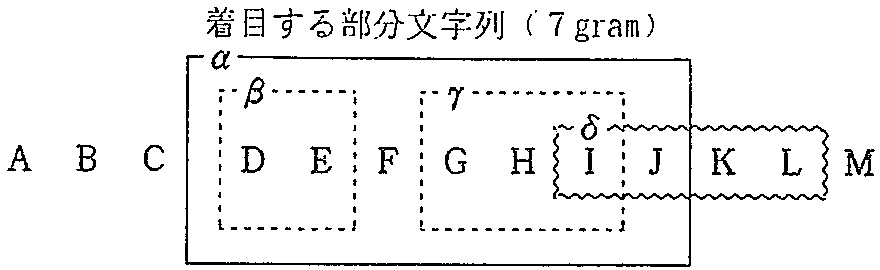
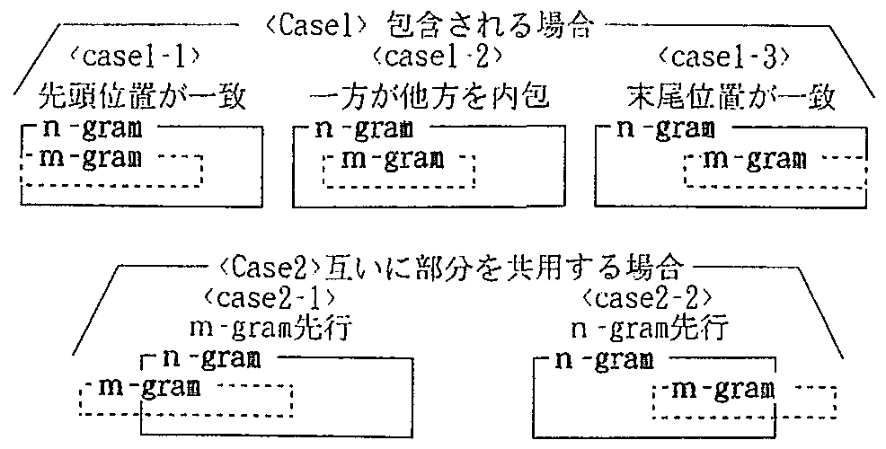
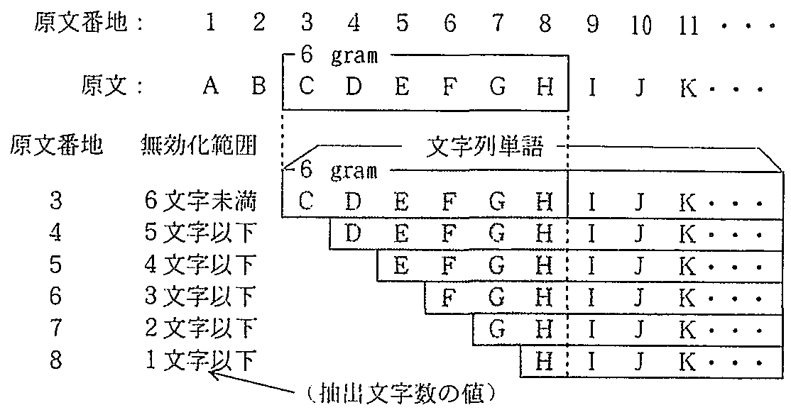
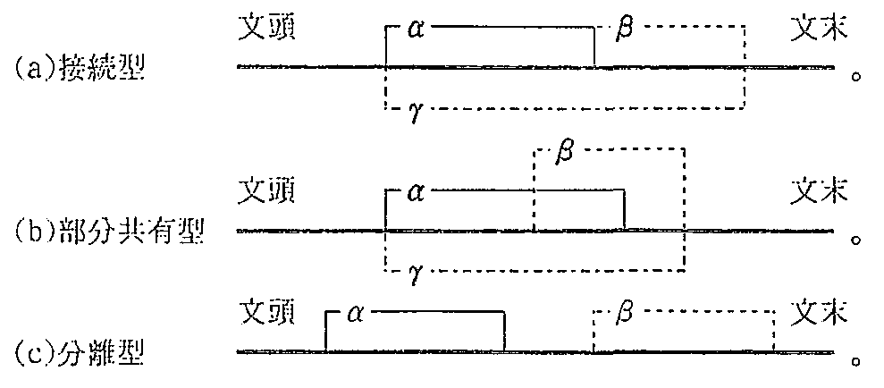

機械翻沢等の自然言語処理に必要な, 使用頻度の高い表現や面定的な言い回しなどの表現を抽出するため, 大量の言語データを対象に, 連鎖型および離散型の共起表現を効率よく自動的に抽出するアルゴリズムを提案した. 連鎖型共起表現の柚出では, 最近提案されたn-gram統計の方法が使用できるが, 膨大な量の断片的な文字列が抽出されるため, その絞り込みが問題であった. また, 離散型共起表現の抽出では, 適切な方法がなかった. そこで, 本論文では, まず, 連鎖型共起表現に対して, 断片的な文字列の抽出を大幅に抑制しながら, 任意の長さ以上で, 任意の出現回数以上の文字列を抽出するアルゴリズムを提案した. 次に, これによって得られた連鎖型の共起表現を組み合わせて, 離散型の共起表現を自動的に漏れなく抽出する方法を提案した. 3カ月分の新聞記事データ(892万字)を対象とした実験の例によれば, 連鎖型共起表現の場合, 文字列長2 文字以上, 出現頻度2回以上で抽出される表現の種類は, n-gramの方法では, 440万種類(延べ出現回数3,120万回)であったのに対して, 本論文の方法では, 97万種類(延べ出現回数260万回)となり, 断片的な表現は大幅に減少した. また, 新たに提案した離散型共起表現抽出方式では, 連鎖型共起の抽出で得られた文字列のうち, 10回以上出現した文字列(12,350種類)の任意の2種類が, 1文中に2回以上共起した表現の組は, 6,500種類(延べ出現回数21,800回)であることなど, 容易に求めることができた.
In order to extract rigid expressions with a high frequency of use, new algorithms that can efficiently extract both uninterrupted and interrupted collocations from very large Japanese corpora have been proposed. More recently, the technique of applying n-gram statistics for uninterrupted collocation has been proposed. This enables the extraction of collocations in the order of string length and frequency of use. But this metbod posed problems in that large volumes of fractional and unnecessary expressions are included. To solve this problem, this paper proposes a new algorithm that restrains the extraction of unnecessary expressions. This is followed by the proposal of a method that extracts interrupted collocations combining the uninterrupted collocations thus obtained. These new methods are applied to newspaper articles containing 8.92 million characters. In the case of uninterrupted collocations with string length of 2 or more characters and whose frequency of appearance is 2 or more times, there were 4,4 million expressions (total frequency or 31.2 million times) extracted by the conventional method. In contrast, the new method reduced this to 0.97 million types (total frequency of 2.6 million times) revealing a substantial reduction in fractional and unnecessary expressions. In the case of interrupted collocational substring extractions, combining the substring with frequency of 10 times or more extracted by the first method, yielded 6.5 thousand types of pairs of substrings with the total frequency of 21.S thousand times.
| 1. まえがき | |
| 2. 従来の方法とその間題点 | |
| 3. 連鎖型共起表現の抽出法 | |
| 3.1 重複する文字列の扱い | |
| 3.2 文字列抽出アルゴリズム | |
| 4. 離散型共起表現の抽出法 | |
| 4.1 抽出する共起文字列の条件 | |
| 4.2 文字列抽山アルゴリズム | |
| 5. 共起表現の抽出実験 | |
| 5.1 連鎖型共起表現の抽出 | |
| 5.2 離散型共起文字列の抽出 | |
| 5.3 今後の改良と応用について | |
| 6. あとがき | |
| 参考文献 |
最近, 自然言語処理において, 大量のコーパスや用例の重要性が指摘され, それを分析する技術の必要性が増大している. 例えば, 機械翻訳では, 単語単位の直訳ではうまく訳せないフレーズを集め, フレーブ単位に翻訳する方法や, 一定の構造を持つ表現を対訳パターン化し, パターン辞書によって原言語を目的言語に対応づける方法などが考えられている. これらの方法を実現するには, 現実に使用されている言語データの中から, 使用頻度の高いフレーズや表現のパターンを抽出することが必要である.
しかし, 膨大な言語データを対象とするとき, 任意の長さで, 出現頻度の高い表現文字列を漏れなく自動的に発見して, 抽出することは, 計算量の点で困難であった. そのため, 従来, 自然言語としての特徴に着目する方法, 抽出する文字列の性質に着目する方法など, 目的に合致する文字列を限定的に抽出する方法が考えられてきた. 例えば, 前者の方法としては, 言語データから結びつきの強い単語を取り出す観点から, 2単語の結びつきの強度に着目した方法1), 単語間の距離に着目した方法2), 結合単語数と出現回数を考慮した 方法3),4)などが提案されている. 後者の方法としては, 抽出する単語や文字の連鎖の数を制限したり, 短い連鎖で出現頻度の高いものに着目して, 限定された文字列(単語列)の範囲で連鎖数を増やして集計する 方法5)などが考えられていた.
これに対して, 最近, 大量の言語データを対象に, 任意のnに対するn-gram統計を高速に実行する方法が提案され6), 言語データ内にある任意の長さの文字列(一般には記号列)を自動的に抽出し, その出現回数をカウントすることが可能となった. この結果を用いれば, 原文中に使用された文字列を, その長さ(文字数)の順かつ出現傾度の高い順に集計することができる. しかし, この方法では, 抽出する文字列間の相互関係が無視されているため, 既に抽出された文字列の部分文字列が重複して抽出される. したがって, 抽出された文字列を言語表現として見た場合, 文法的, 意味的にまとまりのない断片的な文字列が多数を占める. これを意味のある文字列に絞り込む方法として, 同一の論文6)では, 抽出された文字列とその出現回数を相互に組み合わせる方法の可能性を示している. その後, このn-gram統計データとして得られた文字列から意味のある表現を取り出す方法として, 抽出した文字列のエントロピー基準を用いる 方法7)が提案されている. また, n-gram統計を応用したものに, 助詞的定型表現の抽出の 例8)があるが, この方法では, あらかじめ, 抽出する文字列を構成する字種の組を限定することでn-gramの計算量の問題を回避し, その後, 抽出された文字列を種々のヒューリスティックスを用いて絞り込んでいる.
次に, 離れた位置に共起する表現の組の抽出を見ると, 複数の文字列を組み合わせて, 原文中での共起を調べることが必要である. n-gram統計では, 膨大な量の文字列が抽出されるため, 抽出された文字列すべてを組み合わせて原文をサーチするのは物理的に因難であった. 連鎖型, 離散型を特に区別せず, 1文中に共起表現が占める割合の多い文を定型的な文として抽出する 試み9),10)もあるが, 大量の言語データの中から, 出現頻度の高い文字列の組を, 漏れなく自動的に発見し集計するのに効果的な方法は知られていない.
ところで, 大量の言語データを対象とするとき, 共起表現抽出の問題は, 第1に, 計算量(ファイル量)増大による計算可否の問題であり, 第2に, 得られた大量の結果から必要な表現を選択する問題である. 特に, 離散型共起の場合, 計算量は, それを構成する表現要素の数に対して幾何級数的に増加することが問題となる. 計算量を削減する方法を考える際は, 共起表現抽出の目的から考えて, 必要な共起表現を漏らしてしまうような絞り込みは望ましくない.
連鎖型の文字列抽出の場合は, n-gram統計の方法によって, すでに, 第1の問題は解決されているが, 表現の単位とみなせない(単語の断片を含む)断片的な文字列が多赦抽出される. このため, 離散型共起の場合, 計算量が増大し, 計算不可能となることが問題となる. 断片的な文字列の抽出が抑制され, 計算量が可能な範囲に収まれば, 離散型共起においても, 第1の問題は解決する. また, 第2の問題については, 最終的には, 使用目的ごとに人手で判断せざるを得ないから, 出力される文字列の量(種類)が, 人手作業に支障のない範囲(数千種, 最大数万種以下)になれば, 第2の問題も当面解決したと言える.
以上の観点から, 本論文では, 連鎖型共起表現抽出において断片的な文字列抽出を抑制する方法として, 言語データの中から, 最長一致の文字列抽出(ある文字列が抽出されたとき, その文字列に含まれる部分文字列は抽出しない)を条件とし, 任意の長さ以上, 任意の使用頻度以上の共起表現を, 漏れなく, 自動的に抽出し, 集計する方法を提案する. 次に, その結果を使用して, 複数の要素が離れた位置に共起する離散型共起表現を自動的に抽出し集計する方法を示す. また, 提案した手法の動作確認のための適用例として, 日本語新聞記事データからの連鎖型, 離散型共起表現の抽出結果を示す.
(1) 文字列抽出の条件
自然言語の文中で共起する表現☆としては, 連語やフレーズのように連続した文字列を構成するもの(連鎖型共起表現と呼ぶ)と, 係り結び, 呼応関係, 特定の動詞と特定の名詞の組などのように, 2種類以上の文字列が, 文中の離れた位置に現れるもの(離散型共起表現と呼ぶ)がある. 離散型共起表現は, 連鎖型共起表現の文字列が文中で共起したものと考えることができるから, まず, 前者の文字列を考える.
さて, 連語やフレーズのような連続した文字列を漏れなく発見すること, また, 文法的, 意味的に見て, 表現の単位をなさないような断片的な文字列の抽出を最小限に押さえることを狙って, 以下の条件で文字列を抽出することとする.
| 第1の条件: | 任意の長さ以上の文字列を抽出する. | |
| 第2の条件: | 任意の出現頻度以上の文字列を抽出する. | |
| 第3の条件: | 最長一致の原則で文字列を抽出する. |
このうち第3の条件は, 原文中のある場所からある文字列が一度抽出された後は, その文字列内に含まれる部分文字列は抽出の対象としないことを意味する. ただし, その部分文字列が別の場所に現れた時は抽出される. 例えば, 図1の場合, 7gramの文字列αが抽出されたとすると, それ以降の6gram以下の文字列の抽出では, α部分の部分文字列であるβやγは対象外とする. ただし, αが抽出された場所以外の位置に現れた「DE」, 「GHI」は当然, 抽出の対象となる. また, 文字列δは, αの部分文字列でないので, 抽出の対象とする.
|
 |
(2) 表現抽出における最長一致の原則の意義
一般に言語表現は, 大小の表現が幾重にもネストして構成される. 共起表現の抽出では, 表現の単位や長さをあらかじめ指定しなくても, このような表現の中から, 繰り返し使用される表現の単位を自動的に発見し, 抽出できることが望まれる. そこで, すべての文字列を網羅的に抽出すれば, そのような表現は抽出されるが, 一度抽出された文字列の中からも部分文字列が重複して抽出されるため, 多くの断片的な文字列が含まれることが問題となる.
ところで, 言語の共起表現は, 複数の単語が共起した表現だと考えると, 共起表現の文字列の境界は, 同時に単語境界ともなっている. 一方, 可能な限り長い単位で文字列を抽出すれば, その文字列の境界は単語境界に一致する可能性が高いから, 断片的な文字列ではなく共起表現である可能性が高くなる. すなわち, 断片的文字列の抽出が抑制されると期待される. 以上から(1)では, 第3の条件を設けた.
ここで, 第3の条件で抽出が抑制される文字列について考える. 抑制される文字列には, より大きな文字列の部分としてしか使用されないため, 一度も抽出されないものと, 他の部分からは独立性のある表現として何回か抽出されるが, ある文字列の部分文字列として使用された部分でカウントが抑制されろものがある. 共起表現の網羅性の観点から見れば, このうち, 前者の抽出漏れが問題で, その中に, 表現とみなせる文字列が含まれるかどうかが大切である.
しかし, ある表現がより大きな文字列の中に埋もれた部分的な表現であっても, 独立性が高く, 繰り返して使用されるような表現であれば, ある文字列の部分文字列としてだけでなく, それ自身が最長の単位であるような文字列として繰り返し出現することが 期待できる☆. 以上から, 第3の条件があっても, 繰り返し使用される共起表現(の種類)は, 網羅的に抽出されるものと期待できる.
(3) 長尾・森の方法とその問題点
任意のnに対するn-gramを効率的に抽出して集計する方法として, 既に, 長尾・森の方法6)が提案されている. この方法を要約すると以下のとおりである.
[長尾・森の方法]
集計対象とする言語データ全体の文字数を N とする.
手順1: 「原文番地ファイルの作成」
N 個のレコードからなるファイル(原文番地ファイル)を用意し, 各レコードに, 0から順に N -1 の値(原文番地)をいれる. 原文番地は, 言語データ上, その値で示される文字番号から始まり, 末尾( N -1 番目の文字)で終わる部分文字列(以下, 文字列単語と呼ぶ)への ポインタの意味を持つ.
手順2: 「汎用ソートファイルの作成」
原文番地ファイルの各レコードを, 対応する文字列単語の文字コード順に, ソートしたファイル(汎用ソートファイル)をつくる.
手順3: 「一致文字数のカウント」
汎用ソートファイルの各レコードの示す文字列単語を, その直後のレコードの文字列単語と先頭文字から比較し, 一致した文字数(一致文字数)を書き込む.
手順4: 「文字列の抽出とカウント」
一致文字数をレコード順に調べ, 部分文字列の種類とその出現回数を編集する.
この方法により, 任意の回数以上出現した文字列を長さ(文字数)ごとに, かつ, 出現回数の大きい順に得ることができるため, 目標とする第1, 第2の条件は満足されるが, 目標とする第3の条件は満足されない.
第3の条件を満たすようにするため, 抽出された文字列の出現回数に対して, より長い文字列に含まれていた部分文字列の出現回数を差し引くなど, 次数の異なる複数のn-gram 集計表を組み合わせて計算する方法が考えられるが, 集計表が生成された時点では, 抽出された文字列の原文中での相互関係の情報が失われているため, 計算は不可能である☆.
汎用ソートファイルに戻って, 言語データの中で, 一度抽出した文字列の部分は別の文字列として改めて抽出したり, カウントしたりしない方法を考える. 以下では, 汎用ソートファイルから, 一致文字数の多い順に, 部分文字列を抽出するものとして議論する.
さて, n-gram 文字列とm-gram 文字列の抽出を考える. n ＞m とすると, 条件より, n-gram 文字列の抽出は, m-gram 文字列に先立って実行される. 原文上, n-gram 文字列とm-gram 文字列が共通部分を持つ場合が問題となるから, それを分類すると, 図2のように, m-gram 文字列がn-gram 文字列内に内包される場合と, m-gram 文字列とn-gram 文字列が互いにその部分を共有する場合に分けられる.
|
 |
(1) 無効化の必要なレコードの範囲
n-gram が先行して抽出されたとき, case1 のm-gram は, いずれも抽出対象とならない. したがって, n-gram 文字列を抽出するとき, このような関係にあるm-gram は, 後の処理で抽出されないようにする必要がある. そこで, n-gram が抽出されたとき, 汎用ソートファイル上で, それに包含されるm-gram を探して, 該当レコードが無効とされる条件を付与する方法を考える.
そこで, まず無効化の対象となるレコードについて考えると, case 1-1 の場合は, 抽出されたn-gram のレコード自体が再び抽出の対象にならないようにすればよい. 次に, case 1-2, case 1-3 の場合について考えると, 無効化の対象となるレコードは, 原文上, 着目する n-gram の開始文字の位置から数えて n 文字先までの各文字を先頭文字とする文字列単語のレコードであることが分かる.
次に, 無効化の条件について考えると, case 2-2 の場合のm-gram は無効化してはならないから, 上記の対象レコードのうち, 無効化するレコードは, 一致文字数がそれぞれ n - 1, n - 2, ・・・, 1 以下のレコードに限られることが分かる. なお, case 2-1 にあるようなm-gram の場合は, 上記の無効化処理の対象外となっており, 抽出集計の対象となる.
以上の無効化処理の対象範囲について, 図3 に例を示す. 図では, 原文番地3 のレコードから6 gram の文字列, 「C〜H」 が抽出対象と判断されたときは, 原文番地4〜8 の文字列のH までの部分が無効化されることを示している.
|
 |
(2) 無効化すべきレコードの検索
汎用ソートファイルのレコードは, 文字列単語を示す原文番地の値i に対して順不同に並んでいる. そのため, あるレコードの原文番地の値i を見て, 原文番地の値が, i + 1, i + 2, ・・・ となっているレコードを探すには, シーケンシャルサーチが必要で, 検索時間が大きな問題となる. これに対して, 元の原文番地ファイルでは, レコードは原文香地の値i の順に並んでいる. すなわち, 無効化の要求が発生したレコードに引き続いて, 無効化をチェックすべきレコードが順番に並んでいるため, 検索は高速に実行できる. そこで, 汎用ソートファイルをもう一度, 原文番地の値の順に再ソートし, 得られたファイル上で無効化処理を 行うものとする☆.
(1) アルゴリズム
前章の議論をふまえ, 言語データから, 2 回以上の出現回数を持つ固定的な(独立性の高い) 表現を文字列として, 文字数の多い順に, かつ, 重複なしに抽出するアルゴリズムを提案する.
[文字列抽出アルゴリズム]
手順1〜手順3 : 長尾・ 森の方法と同じ
手順4 : 「抽山文字数の記入」
汎用ソートファイルの各レコードの示す文字列単語について, 先頭から何文字抽出対象となっているか(抽出文字数) を調ベ, レコードに記入する (拡張汎用ソートファイルができる). 抽出文字数は, 前後のレコードの一致文字数の関係から簡単に決まる.
手順5 : 「拡張原文番地ファイルの作成」
拡張汎用ソートファイルを原文番号順にソートし直し, 拡張原文番地ファイルとする.
手順6 : 「有効無効判定処理」
拡張原文番地ファイルの各レコードの抽出文字数を順に調ベ, 各レコードの無効判定を行う. その結果は採否表示の値として記入する. 無効判定の方法は, 3.1 節で述べたとおりである.
上記で得られた拡張原文番地ファイルを再度, 汎用ソートファイルのレコード順にソートし, これを再拡張汎用ソートファイルとする.
手順8 : 「抽出文字列集計処理」
再拡張汎用ソートファイルの採否表示, 抽出文字数, 一致文字数の関係を調べて抽出する文字列を決定し, 同時に, その出現回数を求める.
このとき, 前後のレコードの一致文字数の関係から抽出文字数は求められる (手順4 参照) ため, 抽出文字数は参照しなくても集計できる.
(2) 例題検討
以上のアルゴリズムの適用例を図4 に示す. この例では, n-gram 統計で抽出される文字列の種類が24 種類で, 延べ出現回数が72 回であるのに対して, 本論文の方法では, 5 種類, 10 回に絞られる.
| ||||||||||||||||||||||||||||||||||||||||||||||||||||||||||||||||||||||||||||||||||||||||||||||||||||||||||||||||||||||||||||||||||||||||||||||||||||||||||||||||||||||||||||||||||||||||||||||||||||||||||||||||||||||||||||||||||||||||||||||||||||||||||||||||||||||||||||||||||||||||||||||||||||||||||||||||||||||||||||||||||||||||||||||||||||||||||||||||||||||||||||||||||||||||||||||||||||||||||||||||||||||||||||||||||||||||||||||||||||||||||||||||||||||||||||||||||||||||||||||||||||||||||||||||||||||||||||||||||||||||||||||||||||||||||||||||||||||||||||||||||||||||||||||||||||||||||||||||||||||||||||||||||||||||||||||||||||||||||||||||||||||||||||||||||||||||||||||||||||||||||||||||||||||||||||||||||||||||||||||||||||||||||||||||||||||||||||||||||||||||||||||||||||||||||||||||||||||||||||||||||||||||||||||||||||||||||||||||||||||||||||||||||||||||||||||||||||||||||||||||||||||||||||||||||||||||||||||||||||||||||||||||||||||||||||||||||||||||||||||||||||||||||||||||
二つ以上の表現が, 1 文中の離れた位置に共起するような表現の組(離散型共起表現) と, その出現回数を求める方法を考える. 連鎖型共起表現の抽出 (3 章の方法) では, 複数の文にまたがる文字列は抽出の対象外としたため, 抽出された連鎖型共起表現は, 文内に閉じている. したがって, 離散型共起表現を抽出するには, 言語データを先頭の文から順にサーチし, 連鎖型共起表現の文字列の組が1 文中に現れる現象を, 文字列の組ごとにカウントすればよいが, 文境界文字(句点) の扱いと抽出する表現の位置関係が問題となる.
(1) 句点の扱い
通常, 日本文は句点で終わるため, 句点から句点までを1 文とする. 引用文等, 1 文内に句点を持つ別の文などを内包する文では, 簡単のため, 内包される文(対となっている引用記号の区間) は無視する.
(2) 抽出する文字列の相互関係
離散型の文字列共起では, 文中で, 互いに接続した文字列や部分的にオーバラップする文字列の組は抽出の対象外となる. そこで, 3 章で抽出された文字列の相互関係について考える.
さて, 文字列αとβが同一の文から抽出された連鎖型文字列とすると, その原文上の位置的関係は, 図5 に示すような三つの関係のいずれかとなる. 文字列αとβが分離している(c) の場合は, 当然, 離散型共起表現の抽出対象になるから, ここでは, (a), (b)の場合について考える.
|
 |
(a) 文字列αとβが接続している場合
言語データ中, このような文字列を含む場所は, 最大1 カ所である. なぜなら, そのような文字列を含む場所が2 カ所以上ある場合は, 文字列αβがより文字数の多い文字列γ として集計され, それらの文中の部分文字列αおよびβはカウントされないからである. したがって, 文字列αとβが文中に共起する回数が2 回以上ある場合は, 最大1 文を除く他の該当する文は (c) のタイプ(分離型) の共起となっている. この場合, (a) のタイプの共起は, 通常, 分離型で共起する文字列がたまたま接続したものとみなせるから, 離散型共起表現の抽出対象となる.
(b) 文字列αとβがオーバラップしている場合
文字列αとβを包含する文字列をγ とする. 前項と同様, このような文字列γ が, 言語データ内に2 カ所以上出現した場合は, γ 自身が連鎖型共起表現の抽出の対象となり, その部分に含まれた文字列α とβは, 抽出されない. したがって, 原文中, (b) のような関係にある文字列αとβが抽出された文は, 高々1 文に限られ, αとβが共起する残りの文は, いずれも (c) のタイプの共起である. しかし, この場合は, (b) のタイプのαとβは文中の共起とは言えないから, 抽出集計の対象とならない.
以上から, 文内の離散型共起表現の抽出においては, (b) のタイプの共起のみを抽出対象外とすればよい.
(3) 表現要素の出現順序の扱い
離散型共起表現では, それを構成する表現要素( ここでは, 連鎖型共起表現として抽出された部分文字列)の出現順序は意味を持つため, 出現順序を区別して抽出し集計する.
(1) アルゴリズム ( 図6 参照)
[前準備]
再拡張汎用ソートファイル上の連鎖型共起表現として抽出された文字列に文字列番号を付与する.
手順9 : 「再拡張汎用ソートファイルの再ソート」
再拡張汎用ソートファイルを原文番地の値の順にソートし, 拡張原文番地ファイルのレコード順に戻す.
手順10 : 「文番号の付与」
得られたファイルの各レコードに文番号を記入する.
手順11 : 「ファイルの圧縮」
上記ファイルを以下の手順で圧縮し, 「離散型共起圧縮ファイル」を作成する(次の手順に備えて, 不要な作業領域を開放する).
| �� | 文番号, 文字列番号, 抽出文字数, 原文番地の四つの欄以外は, 削除する. | |
| �� | 文字列番号の欄の値がないレコードを削除する. |
手順12 : 「離散型共起表現の抽出とカウント」
一般に, k: 種類(k ≧2)の文字列からなる離散型共起表現を抽出するものとすると, 同一の文内にある文字列番号のk 個の組み合わせのすべてを (文中の出現順序の順にセットにする) ファイルに書き出し, それをソートして, 同一の組の数をカウントする.
以上で, 離散型共起表現の集計表が求められる. これらの表現を含む文を出力するには, 手順12 で作成する各表現の組に文番号を追記しておけばよい.
(2) 例題検討
以上の手順を, 図4 の例に適用し, 要素数2 の離散型共起表現を求めた. その結果を図6 に示す. この例では, 3 章で抽出された5 種の連鎖型共起文字列25組中, 1 文内に離れて2 回以上, 共起する文字列の組が6 組で, それらの延べ出現回数は12 回である.
図6 離散型共起表現抽出アルゴリズム実施例 (図4 の手順7 から続く)
Fig. 6 Example of Interrupted collocational substring extraction (Follows from Fig. 4). 5. 共起表現の抽出実験本論文で提案した方法の効果を検証するため, 日本語データへの適用例として, 日経新聞記事3 カ月分(892 万字) を対象に, 連鎖型共起文字列および離散型共起文字列の抽出実験を行った. ただし, 読点を除く記号類を含む文字列は抽出の対象としないこととした. 使用した計算機は, XEROX ARGOSS 5270 (SUN OS4.1.3) で, 使用したメモリ量は最大48 MB である. 本章で, 得られた文字列の特徴と処理時間について述べる. 5.1 連鎖型共起表現の抽出(1) 抽出文字列の性質 抽出する文字数もしくは文字列の出現回数を制限した場合に, 抽出される文字列の種類数と延べ出現回数を従来の方法と比較して, 表1, 表2 に示す. 文字列の長さから見た, 抽出される文字列の種類数, 出現回数および文字列の例を表3 に示す. また, 出現頻度の高い文字列の例を表4 に示す.
表1 抽出された文字列の種類と延べ度数 ( その1* )
Table 1 Number of extracted substrings and their total frequency (No.1 ).
* 文字列の長さから見た集計
表2 抽出された文字列の種類と延べ度数 ( その2* )
Table 2 Number of extracted substrings and their total frequency (No.2).
* 出現頻度から見た集計
表3 抽出された文字列の例 ( 出現回数の多い順に掲載: ( ) 内は出現回数)
Table 3 Examples of extracted substrings (in the order of frequency).
表4 出現頻度の高い文字列の例
Table 4 Examples of substrings with high frequency.
これらの表から, 以下のことが分かる. 本論文の方法では, 期待されたとおり, 従来の方法に比べて, 多くの断片的な文字列の抽出が押制され, 抽出される文字列の種類, 出現回数共に大幅に減少する. 例えば, 2文字以上, 2回以上の文字列では, 抽出される種類が約5分の1, 延べ出現回数も約12分の1に抑制される. この効果は, 文字数の大きい文字列ほど大きく, 20文字以上の場合では, 抽出される文字列の種類, 延べ出現回数共に, 約100分の1になる. (2) 処理時間について 最初の文字列単語のソート(汎用ソートファイルの作成)に, 最も多くの時間(ターンアラウンド時間: 約40時間, CPU時間: 約10時間)がかかった☆が, その後の処理は, それに比べてきわめて短時間(同: 34分, 同: 16分)であった. 5.2 離散型共起文字列の抽出(1) 抽出文字列の性質 簡単のため, 単独ではそれぞれ10回以上出現した2種類の文字列が1文内に離れて共起する 場合☆について, 抽出された文字列の組の数を表5に示す. また, 出現頻度の多い文字列の組と, 2回以上出現した文字列の組の中で合計文字数の多い文字列の組を, それぞれ, 表6, 表7に示す.
表5 抽出された文字列の組の種類と延べ度数
Table 5 Characteristics of extracted pairs of substrings.
(2種類の文字列の文内共起の場合)
表6 出現頻度の高い文字列の組の例
Table 6 Pairs of substrings with high frequency.
表7 合計文字数の大きい文字列の例
Table 7 Pairs of longest substrings.
表6, 表7から, 出現頻度の高い離散型共起の多くは, 名詞同士の共起であることが分かる. 特に, 話題としで新聞記事に取り上げられた固有名詞や日時等の数量との共起が数多く 取り出されている☆☆. このような名詞の共起情報は, 例えば, 機械翻訳用の辞書作成などに応用できる. また, テンプレート翻訳などでは, 名詞同士の共起よりもむしろ, 文型パターンを作り易い助詞や助動詞を含む表現要素の共起を収集したい場合がある. 表5を見ると, 抽出された表現の組は, すでにかなり絞り込まれているため(全体で, 6,544件), 全体を人手によってチェックし, 助詞, 助動詞を含む表現の組など, 目的に応じた表現の組を選択して取り出すことはさほど困難ではない. しかし, さらに大量の言語データの場合, 出力されるデータ量が増大し, 人手による選択が困難となることが考えられる. そのような場合, 得られた結果から目的にあわないような表現を選択的に削除する方法もあるが, 連鎖型共起, 離散型共起の抽出処理の過程に介入して, 抽出対象文字列に制限を加えることもできる. なるべく早い段階で, 抽出対象とする文字列の字種構成に制約を加えたり, 抽出された文字列をチェックして, 不要なものを前除したりすれば, その後の計算量は減少し, 出力結果のチェック作業も減少する☆☆☆. ここでは一例として, ひらがな文字を含まない文字列と記号英数字を含む文字列は 抽出しないという条件で得られた離散型共起の結果の 一部を表8, 表9に示す. この場合, 新聞記事の文型に相当するような, 離散型共起表現が抽出されることが分かる.
表8 抽出された離散型共起表現の例 (( )内は出現回数)
Table 8 Interrupted collocational expressions (in the order of frequency).
(ひらがなを含み, 記号英数字を含まない要素を抽出した結果)
表9 合計文字数の多い離散型共起表現の例
Table 9 Interrupted collocational expressions (in the order of total length).
(ひらがなを含み, 記号英数字を含まない要素を抽出した結果)
(2) 言語データ量と処理サイズについて 離散型共起の場合は, 連鎖型共起で抽出した表現の組を扱うため, 表現の組を書き出すためのファイルの容量が問題となると予想される. このファイルの必要量は, 離散型共起として生起した表現の数(頻度1以上の延べ度数)で決まる. 実験例によれば, 連鎖型共起で抽出した表現97万種類(延べ度数260万回)を足切りをせず (ただし度数1のものは除く), そのまま使用して要素数2の離散型共起を計算すると, 度数2以上の離散型表現として, 18万種類(延べ度数40万回)の表現の組が得られた. このとき, 手順12でファイルに書き出された表現の組(ただし文字列番号のペア)は, 2,000万組で, それに要したファイル量は400MB(20バイト/文字列ペア)であった. これに対して, 連鎖型共起として抽出された文字列のうち, 度数10以上のもの1.2万種類(延べ度数約22万回)を取り上げ, それらを要素とする離散型共起表現を求めた場合は, 2度数以上の離散型共起表現として, 6,500種類(延べ度数約2万回)の表現が得られた. この計算の過程でファイルに書き出された表現の組は, 約58万組で, 使用したファイル量は約12MBであり, 足切りをしない場合に比べて, 1/30以下に減少した. ここで, 言語データ量と処理サイズの関係を考える. 連鎖型共起で抽出される表現の延べ度数は, 言語データ量にほぼ比例し, 離散型共起で抽出される表現の延べ度数は, 連鎖型共起で得られた表現の延べ度数の2乗にほぼ比例すると考えられろから, 離散型共起集計用のファイル使用量は, 言語データ量の2乗にほぼ比例すると推定される. しかし, 言語データ量が増加したときは, それに比例して連鎖型共起表現の足切り値を上げても抽出精度は低下せず, 重要な(頻度の高い)表現は漏れなく収集できると 期待される☆. そこで, 表2を見ると, 足切り値にほぼ反比例して, 抽出される連鎖型共起表現の延べ度数は減少していることが分かる. これらの点から, 原文データ量が増加したときは, 足切り値をそれに比例して上げることにより, 抽出精度を低下させないで離散型共起の計算ができ, そのとき, 計算に必要とされるファイル量の増加は, 言語データの増加に比例するオーダに抑えられると期待できる. 5.3 今後の改良と応用について(1) 目的に合わせた抽出文字列種別の指定 離散型の共起表現抽出の場合, 計算可能な言語データ量を増大させるためには, 特に, それに使用する連鎖型文字列の種類を少しでも減少させることが望まれる. これに対して, 実験例で抽出された文字列には, まだ, 様々な種類の文字列が混ざっている. 日本語データの場合, 例えば,
(2) 抑制された文字列カウントの一部復活 本論文では, 連鎖型共起の計算において, 一度抽出した文字列内の部分文字列の抽出はダブルカウントになると考え, 条件3(最長一致のもののみ抽出)を前提とした. このため, 抽出される文字列は, 独立性があり, 連鎖共起とみなせる文字列に絞られている. しかし, より細かい要素からなる離散型共起をも収集しようとする場合は, 一度抽出した文字列の中の要素からも, 要素的な表現を抽出すればよい. 断片的な文字列の抽出を抑制しながら, これらの要素的表現を抽出するには, 図1で, 文字列αの中に含まれる部分文字列のβやγも, その文字列が原文中の他の部分に生起して抽出対象となったときは, カウントに加えると良い. 具体的には, 3章のアルゴリズムの手順8で, n-gram の文字列を抽出する際, そのレコードの上方向に連続するレコードで, 抽出文字数の値がn+1 以上のものもn-gram の抽出対象に加えればよい. その際, 新たに抽出対象となったレコード(重複抽出の対象レコード)をコピーして追加しておけば, 離散型共起の計算処理の手直しは不要となる. (3) 離散型共起表現抽出における1文字要素の扱い 本論文の実験例では, 計算量を減少させるため, 抽出対象文字列の文字数は2文字以上であるとした. しかし, 離散型共起表現の抽出において, 日本文の文型を抽出したいような場合, 「〜が〜を〜に〜」などのように, 文中から1文字キーワードの組を探したい場合がある. このような場合は, 後に述べるように, 形態素解析結果に対して, 本論文の方法を適用すればよいと考えられるが, (1)で述べた方法などにより, 抽出対象を絞り込むことによって計算量を減らし, 抽出を可能とすることも考えられる. (4) 形態素列, 単語列等への適用 日本語の文型を抽出するには, 言語データを形態素解析して得られた単語の文法的属性や意味属性を表す記号列に対して, 本論文の方法を適用することが期待される. 文法的, 意味的に見てどのような種類の文型情報が得られるか, また, 単語共起情報を得る場合, 文字連鎖に適用する方法と, 単語列に適用する方法のどちらがよいかなど, 今後の課題である. 6. あとがき言語コーパスなどの膨大な言語データの中から, 使用頻度の高い表現および表現の組を自動的に発見し集計する方法を提案した. 具体的には, まず, 任意のn-gram の計算法として提案された長尾らのアルゴリズムを 独立性の高い表現を抽出する観点から改良し, 言語データの中に2回以上出現した文字列(連鎖型共起表現)を, 「一度, 抽出した文字列の部分文字列は, その後, 抽出対象としない」という条件下で, 漏れなく自動的に抽出し集計する方法を提案した. 次に, この方法で抽出された文字列を組み合わせて, 文中の離れた位置に共起する文字列の組(離散型共起表現)を抽出し, その頻度を求める方法を示した. 3カ月分の新聞記事データ(892万字)に適用した例によれば, 連鎖型共起表現抽出の場合, 従来の方法では, 2文字以上, 2度数以上の文字列が, 440万種類, 延べ3,120万回の文字列が抽出されたのに対して, 本論文の方法では, 97万種類, 延べ260万件に減少した. 抽出された文字列を比較した結果, n-gram の方法で得られた文字列が, 膨大な量の断片的な文字列(文法的, 意味的に意味のない文字列)を含むのに対して, 本論文の方法では, それらの断片的な文字列が大幅に削除されることが確認された. この効果により, 離散型の共起表現の網羅的な自動抽出が可能となった. 提案した離散型共起表現抽出方式の適用例では, 連鎖型共起の集計で得られた文字列のうち, 10回以上出現した文字列(12,350種類)の任意の2種類が, 1文中に2回以上共起した表現の組は, 6,500種類(延べ出現回数21,800回)であることなど, 離散型の共起表現が容易に求められることが分かった. 以上のとおり, 本論文の方法では, 連鎖型共起表現抽出での断片的文字列の抽出が抑制される結果, 離散型共起表現を容易に計算することが可能となり, 文型パターンなど, 文構造に関する基礎データを, ほぼ自動的に収集することが可能となった. 本論文では, 適用例として日本語文字列データからの抽出結果を示したが, この方法は, 任意の記号列に適用できるため, 単語単位に分割した単語列や形態素解析の結果として得られた文法的要素列, もしくは, 各単語をその意味属性で置き換えた意味属性連鎖など, 種々の応用が可能である☆. 今後は, 種々の適用実験を行い, さらに改良を加えていくつもりである. 参考文献
(平成7年3月31日受付)
(平成7年9月6日採録)
Footnote ☆ 本論文では, 文法的, 意味的に表現の単位とみなせる文宇列を意識して「表現」と呼ぶ. (Return) ☆ ある表現の部分としてしか使用されないような部分的な表現は 抽出されないが, そのような表現は, 元々, それを含むより大き な表現の一部にすぎないと考えられるから, 改めて取り出すこ とはしない. (Return) ☆ 従来, 単語列の場合, 結果から計算する方法が使われていた例3) がある. しかし, その方法では, 原文のある一定領域から, 互 いに部分文字列を共有するような複数の文字列が抽出されてい るとき, 引き過ぎが生じる. 抽出の終わった段階では, 引き過 ぎの有無の判断は下能なため, 正確な計算はできない. (Return) ☆ 汎用 ソートファイルの各レコードに, 次単語番地(next pointer) のフィールドを設ければ, ランダムアクセスによってたどれる. しかし, 通常ファイルサイズは大きく, ディスクアクセス回数 が膨大 (4 章の実験例では, 全レコードに1 回ずつランダムに アクセスする時間は, 1,000 万回 × 10 ms ＝ 30時間程度と推 定される) となる. これに対して連続したレコードの処理 (IO バッファのサイズにもよるが) は高速である. そのようにするに は, 本文で述べたように原文番地順にソートし直す必要がある が, そのためのソート時間は, ソートファイルに次単語香地を 探して書き込む処理と同等の時間で実行できる. 以上から, ラ ンダムアクセスに比べて, ネクストサーチの方が高速だと期待 される. なお, 同種の再ソート処理は, 連鎖型共起文字列抽出 で2 回, 離散型共起で1 回の合計3 回必要となるが, いずれも, 順不同となったレコード番号が元の連続番号になるようにソー トし直すものであり, 単純で高速に実行できる (4 章の例では, ソート 1 回当たり数分である). (Return) ☆ 長尾・ 森のアルゴリズムを使用する部分で, 本実験では, 通常の コムソートを使用したが, 間接アドレスによるソートであるた め時間がかかった. これを高速化するためには, 先頭1 〜2 文字 をメモリ上に取り出し, 直接ソートした後, 部分ソートを繰り 返すなどの方法が考えられる. (Return) ☆ 2 種類の表現の組の集計では, 足切りをしない (2 度数以上を対 象とする) 場合, 約18 万種類(延ベ40 万度数) の離散型表現 が抽出された. ここでは, 結果を見やすくするため, 抽出され る種類が約1万件以下になるように, 単独出現回数10 で, 入力 の足切りをした場合を示す. (Return) ☆☆ 表6 では「ゼネラル」+ 「モータース」, 「サミット」+ 「先進国 首脳会議」 などのペアか頻出しているが, これは, 本文中には 「ゼネラル・ モータース」, 「サミット (先進国首脳会議)」などと して出現していたためで, 読点を除く記号類は連鎖型共起の集 計の対象としなかったためである. (Return) ☆☆☆ 例えば, 連鎖型で抽出した文字列の10%が有効な表現だった とすると, 離散型の場合に抽出される文字列の組の有効なもの は, 0.1 のn 乗 (n は要素とする表現の数) 以下に減少する と考えられる. したがって, 連鎖型に比べて離散型ではさらに, 抽出したい表現をいかに絞り込むかが重要な問題となる. 実験 によれば, 抽出したい表現を字種によって制約する効果が大き いが, この点は, さらに今後の検討が必要である. (Return) ☆ 共起表現の抽出では, 出現頻度の高い表現をいかにもれなく拾 い出すかが問題である. 出現する表現の分布に大きな偏りのな い標本であれば, 標本量を増加させたとき, それにつれて出現 頻度の高い表現の出現回数も増加するから, 適当な値で足切り をしてもそれらを漏 らす心配は少ない. なお, 表現に大きな偏 りのある標本の場合は, ジャンルごとに分けて, 共起表現を収 集する方が適切と言える. (Return) ☆ 著作権チェックのための著作物の照合,遺伝子工学におけるDNA 速鎖のチェックなどへの応用も期待される. 現在プログラムの パッケージ化を予定しているので, ご希望の方は著者までご連 絡ください. ({ikehara, shirai}@nttkb.ntt.jp) (Return) | |||||||||||||||||||||||||||||||||||||||||||||||||||||||||||||||||||||||||||||||||||||||||||||||||||||||||||||||||||||||||||||||||||||||||||||||||||||||||||||||||||||||||||||||||||||||||||||||||||||||||||||||||||||||||||||||||||||||||||||||||||||||||||||||||||||||||||||||||||||||||||||||||||||||||||||||||||||||||||||||||||||||||||||||||||||||||||||||||||||||||||||||||||||||||||||||||||||||||||||||||||||||||||||||||||||||||||||||||||||||||||||||||||||||||||||||||||||||||||||||||||||||||||||||||||||||||||||||||||||||||||||||||||||||||||||||||||||||||||||||||||||||||||||||||||||||||||||||||||||||||||||||||||||||||||||||||||||||||||||||||||||||||||||||||||||||||||||||||||||||||||||||||||||||||||||||||||||||||||||||||||||||||||||||||||||||||||||||||||||||||||||||||||||||||||||||||||||||||||||||||||||||||||||||||||||||||||||||||||||||||||||||||||||||||||||||||||||||||||||||||||||||||||||||||||||||||||||||||||||||||||||||||||||||||||||||||||||||||||||||||||||||||||||||||||||||||||||||||||||||